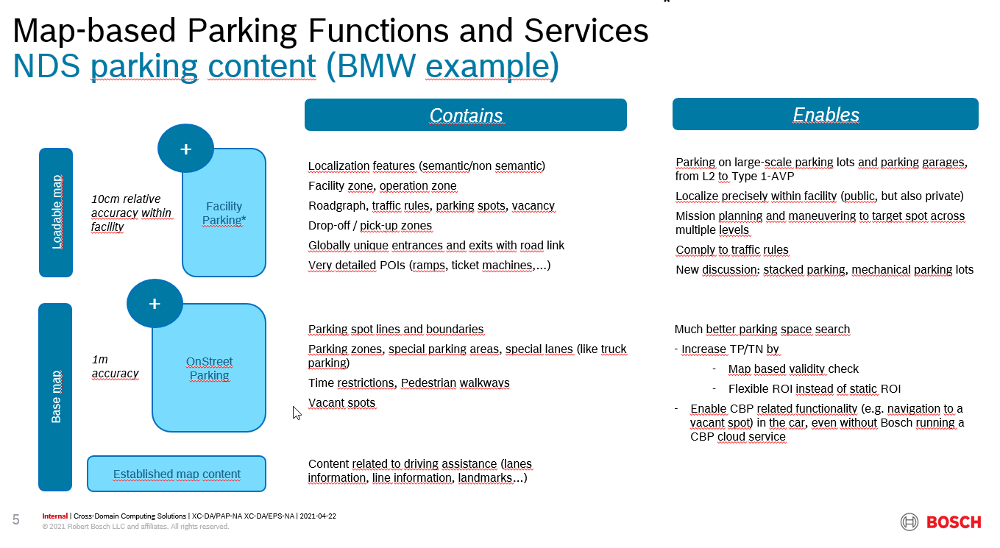

VSLAM
15 Nov 2021
topics:
architecture session review.https://inside-share-hosted-apps.bosch.com/DMS/GetDocumentService/Document.svc/GetDocumentURL?documentID=P12S131675-1629884519-1570
BMW VSLAM info share
Open point :
Currently HPA architecture is fully based on snapshot pipeline solution, we need to check the SLAM pipeline which include the map format / localization strategy and interface and so on. Only we confirm the gap between HPA and Vslam, then we can re-design our HPA arch with VSLAM.
wave3 use case with VSLAM, if we only implement the Training with Replay solution, why we need VSALM tech solution with high risk. we can add advanced visual features to improve the Gridloc performance.
participants:
Pampus Christian (XC-AS/EPF) Hagedorn Matthias (CR/AEL CE-RAD) WANG Alfred (XC-AS/EPF-CN) WU Chenxu (XC-AS/EPF-CN)
08 Nov 2021
participants:
Pampus Christian (XC-AS/EPF) WANG Alfred (XC-AS/EPF-CN) WU Chenxu (XC-AS/EPF-CN) LI Rory (XC-AS/EPY-CN XC-AS/EPY1-CN) HAI Aicheng (XC-AS/EPW2-CN)
go through the requirement in RFI.
20 Oct 2021
paticipants:
Pampus Christian (XC-AS/EPF) WANG Alfred (XC-AS/EPF-CN) WU Chenxu (XC-AS/EPF-CN)
revied the RFI reponse of MMT:
NDS for parking

27 Sep 2021
paticipants:
Pampus Christian (XC-AS/EPF) Hagedorn Matthias (CR/AEL CE-RAD) HAI Aicheng (XC-AS/EPW2-CN) WANG Alfred (XC-AS/EPF-CN) WU Chenxu (XC-AS/EPF-CN)
reviewd the RFI and progress: https://inside-share-hosted-apps.bosch.com/DMS/GetDocumentService/Document.svc/GetDocumentURL?documentID=P01S154667-1908420289-1569
main folder of the VSLAM: https://sites.inside-share.bosch.com/sites/154667/Documents/Forms/AllItems.aspx?RootFolder=%2Fsites%2F154667%2FDocuments%2F01%5FProject%20management%2FProcurement%5FManagement%2FPreRFQ%2FVSLAM
2. Map update：
what is the detail of the map, occupicay grid map? confidence?
standard of map: NDS(Navigation Data Standard): semantic elements, general features(eg. SIFT), ADAS V3?...
3. multi-floor issue:
- any IMU requirement.
Characterization of input signals